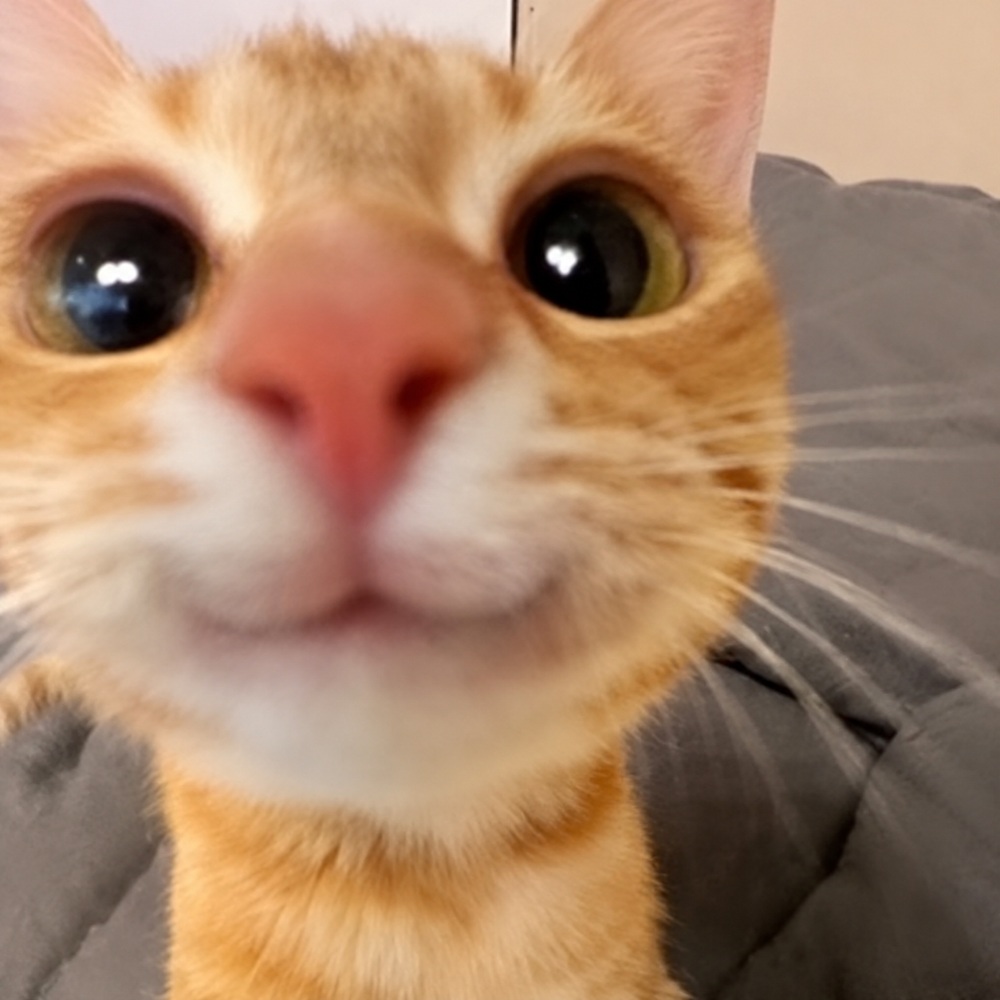

Your real self
You don't need to pretend to be anyone else with me. I want the real you.
JUST YOU & ME, AASHU ♡
Just you, me, and a thousand stars ✨

A LITTLE WORLD, JUST FOR YOU
Some things are too important
to leave unsaid.

Your tiny guide has been waiting for you.
Put our song in this website's folder to hear it here.
01 / 08
CHAPTER ONE · STILL YOU
I could have a thousand things to say, and still struggle to explain what you mean to me. But I want to try, because you deserve to hear it from me — clearly, honestly, and with all my heart.
This isn't about pretending nothing ever hurt. It's about believing that something beautiful can still grow when two people are willing to care for it.
02 / 08
CHAPTER TWO · MY FAVOURITE PERSON
Not because you're perfect. You don't have to be. I love the person you are.
You don't need to pretend to be anyone else with me. I want the real you.
The little things you say and do that stay with me long after the moment ends.
The memories, the laughs, the familiar feeling of being close to you.
The chance to understand each other more deeply and make something stronger together.
I don't want a perfect person. I want an honest, real, growing love.
03 / 08
CHAPTER THREE · US, GOING FORWARD
More honest conversations.
More laughing over the silliest things.
More listening, especially when it's difficult.
More understanding instead of assumptions.
More little moments where we remind each other that we're on the same team.
And when something goes wrong, I want us to face the problem together — not turn against each other.
We can't rewrite everything that happened. But we can choose what we learn from it and how we treat each other from here.
04 / 08
CHAPTER FOUR · MY HEART, WITHOUT FILTERS
My babay, Aashu ♡
I don't even know where to begin, because there's so much I want you to understand, and somehow the words still feel smaller than everything I feel for you.
I love you. I love you so much. And I don't want those words to be something I say only when everything is going perfectly. I want them to mean something in the ordinary moments too — when we're talking about nothing, when we're laughing, when one of us is having a difficult day, and when life feels a little complicated.
We've had our distance. We've had our hurt. We've had a chapter that I wish had been easier for both of us. I can't act like none of that happened, and I don't want us to forget what it taught us. But I also don't want the hardest parts of our story to be the only things that define it.
If we're finding our way back to each other, I want us to do it properly. Not because we're scared of being apart, not because we're trying to force things to be how they used to be, but because we're choosing each other with more understanding than before. I want us to build something that feels right for both of us.
Babay, please be yourself with me. You don't have to hide your personality, your silly side, your feelings, your opinions, or the parts of you that you think might be too much. I want to know the real you. I want you to feel that you can speak honestly with me, even when what you have to say isn't easy to hear.
And I want to give you that same honesty in return. I want to be better at listening instead of assuming, communicating instead of going quiet, and understanding your feelings instead of only thinking about my own. I know love isn't just about saying the right things. It's about what we do, especially when things get difficult.
If there's an issue between us, let's talk about it. Let's give each other room to explain, to listen, to apologise when we need to, and to find a solution together. I don't expect us to agree on everything. I just want us to remember that the problem is something we can face together, with effort from both of us.
I want to do the things I should have done before. Not just say that I'll change, but show you through my actions. I want to learn from what went wrong, take responsibility for my part, and keep showing up for us. I know trust and closeness grow through consistency, and I want to give them the care they deserve.
I can't promise that we'll never have another misunderstanding. We're human, and we'll keep learning. But I can promise that I want to approach our relationship with sincerity, patience, and the willingness to work through things with you. I want both of us to feel loved, respected, heard, and safe being ourselves.
More than anything, I don't want us to take each other for granted. I want us to appreciate the little things. I want us to keep choosing honesty. I want us to make time for each other, celebrate each other's happiness, and remember that being together means contributing to the relationship together.
And Aashu, I want you to know that you don't have to earn my affection by being perfect. Be you. Tell me what you feel. Let me know what you need. Let yourself laugh loudly, be silly, have difficult days, and grow into whoever you want to become. I want to love you as a real person, not as an idea of who I think you should be.
I love you, babay. I want to be close to you again, to make new memories with you, and to give this chapter the honesty and effort it deserves. I want us to be real with each other, faithful to our promises, gentle with each other's hearts, and willing to work together when something needs fixing.
We don't have to figure out our entire future in one day. We can take it one conversation, one decision, one little moment at a time. What matters to me is that we both mean it, that we both contribute, and that we keep treating this love as something worth caring for.
If I could ask for one thing, it would be this: let's not give up on talking to each other when things get hard. Let's not forget the friendship, the softness, and the love underneath everything. Let's keep learning how to be better for ourselves and for each other.
I love you so much, Aashu. I don't want to go back and repeat the past. I want us to move forward and make something new from everything we've learned — something honest, warm, mutual, and real.
Here's to us, and to a gentler new chapter.
Forever your Garve, with all my love. ♡
Take your time, babay. There is one more little thing for you. 🌷
05 / 08
CHAPTER FIVE · FROM HERE, TOGETHER?
Not to pretend the past never happened, but to learn from it. To be real with each other, work through problems together, and give our love the care it deserves.
I love you as you are, Aashu. I want us both to feel sure, heard, and loved. ♡
06 / 08
CHAPTER SIX · SIX LITTLE PROMISES
Tap each lily to let it bloom. Each flower holds something I want you to know. 🌸
Tap a lily to open your first little note, babay.
07 / 08
ONE LAST LITTLE THING
One last thing I want you to remember.
I love you so much. Not just the idea of us, not just the happy memories, but you — the real person behind all of it.
I want us to keep being honest, even when honesty takes courage. I want us to listen to understand, not just to answer. And when we make mistakes, I want us to take responsibility, learn, and try again with genuine effort from both sides.
I want to love you in ways you can feel: in patience, in consistency, in little acts of care, in the way I listen, and in the way I make room for your feelings. I want you to be yourself with me, and I want to be someone you can be real with too.
We don't need to know every answer today. We just need to mean what we say, respect each other, and keep building something that feels good for both of us.
Thank you for being you, Aashu. If we're choosing this next chapter together, I want to treat it with the care, truth, and love it deserves.
A little more understanding, a little more patience, and a whole lot of love.
Yours, Garve ♡
Our story doesn't need to be perfect to be meaningful. Let's keep making it real. 🌷
08 / 08